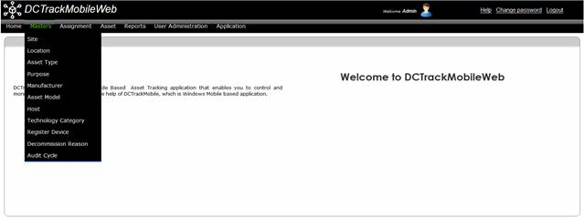

This chapter describes the entire functions specific to the administration of Master Data maintenance-related screens.
The table briefly describes the purpose of the Master Data and their usage of the system.
|
Function |
Description |
|
Maintain Site |
Site represents a physical location, most typically where the data center is located. |
|
Maintain Location |
Locations can represent room, row or a rack of a data center. A location has to be associated with a Site. |
|
Maintain Asset Type |
Represents various types of assets that are used in a data center such as ‘Server’, ‘Storage’ or ‘Network’. User can create any asset type of their choice. Asset Type is associated with an asset. |
|
Maintain Purpose |
Purpose is used as an information that gets associated with asset movement and is typically used to report all the movements that has happened for a particular purpose. Typically, ‘purpose’ is used to group different types of moves such – Relocation, General, Return to Vendor, Replacement etc. |
|
Maintain Manufacturer |
Manufacturer of the asset. Every asset must have a manufacturer associated with it. |
|
Maintain Asset Model |
Asset model for a specific manufacturer. Every asset must be associated with a model. |
|
Maintain Technology Category |
This is a user-defined category to further group the assets. |
|
Maintain Register Device |
Each mobile device has to be registered in the system before the handheld application program can be installed and the device used. This function allows to register each device. |
|
Maintain Reason |
Different reasons that are maintained and used while decommissioning an asset or writing off an asset. |
|
Maintain Host |
Create a host record. Host record can also be created while creating or editing an asset record. |
|
Maintain Audit Cycle |
This is related to periodical physical audit that is carried out by the Inventory function using the handheld application. During an Audit Cycle, one cannot move any asset in or out, or in other words, the inventory is frozen. |
Table 1: Master Data Management Roles & Privileges
The Masters menu provides the following submenu and options
Can Master data be exported to Excel?
Yes. All the Master data items can be exported to excel. Use the excel icon available in each Master data page on the top of the list.
You can click on each sub menu to see the available options that you can click to see the corresponding screen where you can perform the desired action.

Figure 16: Masters Menu with Submenu and Options
|
Copyright © 2019 Hewlett
Packard Enterprise,v5.2.
|